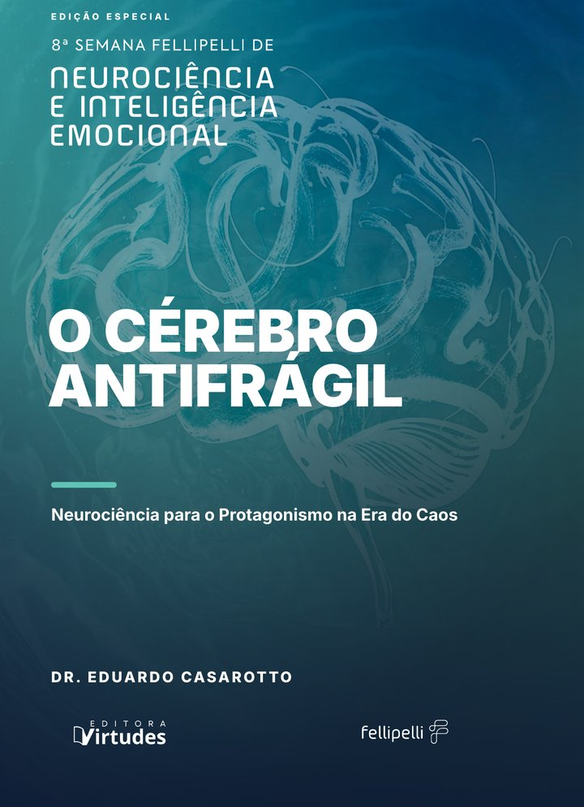

8ª Semana Fellipelli de Neurociência e Inteligência Emocional
O Cérebro Antifrágil
Neurociência para o Protagonismo na Era do Caos
Edição especial do livro do Dr. Eduardo Casarotto, feita para os participantes da 8ª Semana Fellipelli e para acompanhar a palestra. Baixe o seu exemplar em PDF.
Baixar o e-bookPDF · 224 páginas · 5 MB
Pós-graduação lato sensu · Especialização
Pós-graduação em Sistemas Humanizados
Saúde Mental, Cultura Organizacional e Gestão de Riscos Psicossociais (NR-1)
Na palestra, você conheceu a Humanização 2.0. Na pós-graduação, você aprende com o Dr. Eduardo Casarotto a compreender o funcionamento humano e a transformar estruturas, processos e gestão das organizações a partir dele.
- 360 horas, em 15 módulos
- Totalmente online, com aulas gravadas
- Encontro Fechado mensal ao vivo com o Dr. Eduardo Casarotto
- Conclusão de 4 a 12 meses, no seu ritmo
- Certificado emitido pela FACEO - Faculdade Centro Oeste, instituição credenciada pelo MEC
- Pré-requisito: graduação completa em qualquer área

Livro
Conheça o livro Sistemas Humanizados · Humanização 2.0
A obra em que o Dr. Eduardo Casarotto registra a proposta completa da Humanização 2.0: 27 capítulos, com os fundamentos, a construção da estrutura e os manuais prontos para a organização adaptar e aplicar. Acompanha 3 horas de aulas gravadas com o autor, com acesso imediato. Catalogado na Biblioteca do Senado Federal.
Conhecer o livro